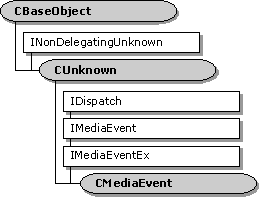

description: The CMediaEvent class provides base class implementation of the IDispatch methods of the dual-interface IMediaEvent. It leaves as pure virtual the properties and methods of the IMediaEvent interface. ms.assetid: 849e08ac-8d1b-4c86-94eb-ab5c4f10d68a title: CMediaEvent class ms.topic: reference ms.date: 4/26/2023 topic_type:
[The feature associated with this page, DirectShow, is a legacy feature. It has been superseded by MediaPlayer, IMFMediaEngine, and Audio/Video Capture in Media Foundation. Those features have been optimized for Windows 10 and Windows 11. Microsoft strongly recommends that new code use MediaPlayer, IMFMediaEngine and Audio/Video Capture in Media Foundation instead of DirectShow, when possible. Microsoft suggests that existing code that uses the legacy APIs be rewritten to use the new APIs if possible.]

The CMediaEvent class provides base class implementation of the IDispatch methods of the dual-interface IMediaEvent. It leaves as pure virtual the properties and methods of the IMediaEvent interface.
The CMediaEvent class also provides base class implementation of the IMediaEventEx interface which derives from IMediaEvent.
The CMediaEvent::GetIDsOfNames, CMediaEvent::GetTypeInfo, CMediaEvent::GetTypeInfoCount, and CMediaEvent::Invoke member functions are standard implementations of the IDispatch interface using the CBaseDispatch class (and a type library) to parse the commands and pass them to the pure virtual methods of the IMediaEvent interface.
| Member Functions | Description |
|---|---|
| CMediaEvent | Constructs a CMediaEvent object. |
| IDispatch Methods | Description |
| GetIDsOfNames | Maps a single member and an optional set of parameters to a corresponding set of integer dispatch identifiers, which can be used during subsequent calls to the IDispatch::Invoke method. |
| GetTypeInfo | Retrieves a type-information object, which retrieves the type information for an interface. |
| GetTypeInfoCount | Retrieves the number of type-information interfaces provided by an object. |
| Invoke | Provides access to properties and methods exposed by an object. |
Â
Â
Â